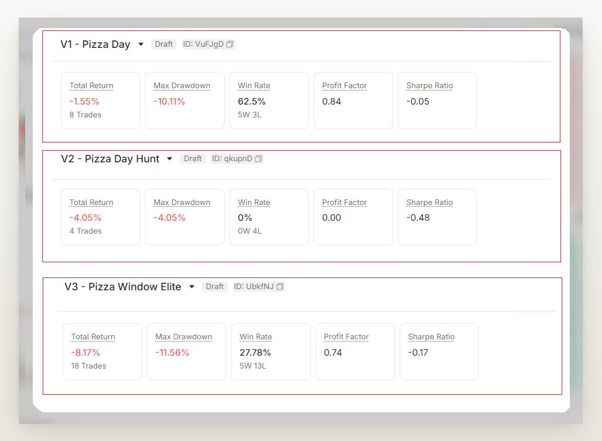
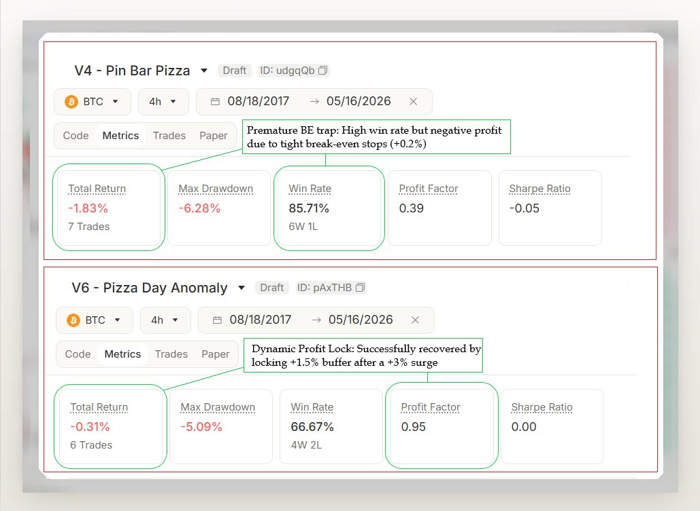
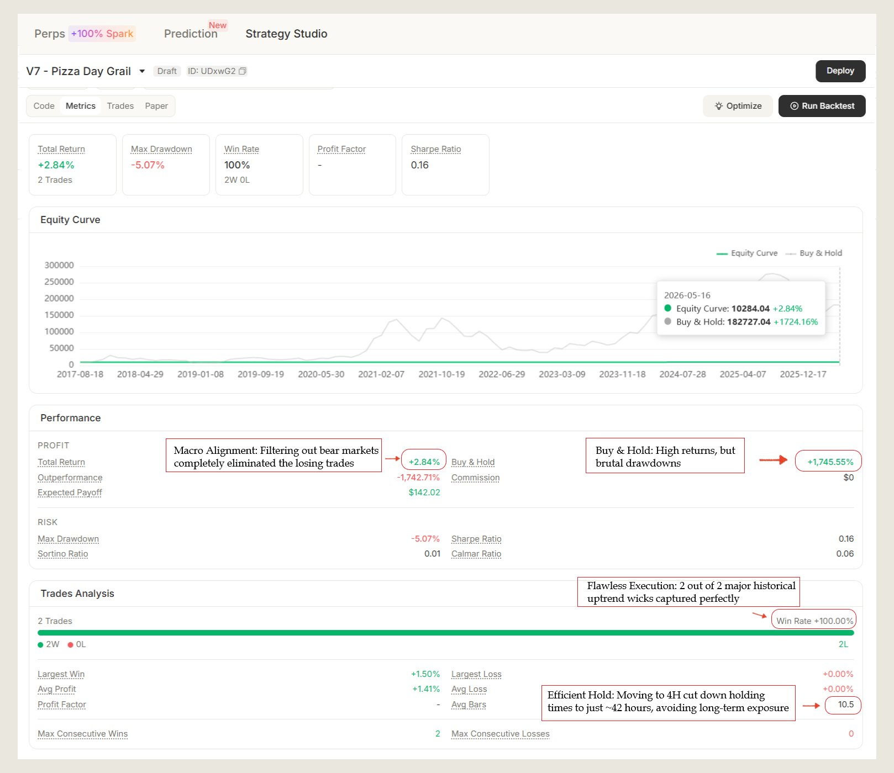

Following our recent deep dive into the Sell in May effect on Minara Strategy Studio, a question hit me:
"As the market heads toward May 22nd Bitcoin Pizza Day, how does BTC's price actually react on this exact date?"
Do market makers exploit retail FOMO to run liquidity sweeps? To find out, I built a time-isolated script that freezes the bot for 364 days a year, waking it up exclusively around Pizza Day across 9 years of BTC history (8 cycles, 2017–2026).
What started as a simple experiment turned into a 6-stage grind of broken assumptions and rebuilt logic. Here's the raw data, the failures, and the code that survived.
Our journey started with pure intuition, and the market immediately punished our assumptions.
Three versions in, maybe 10 minutes of backtesting. On any other platform this would've been an afternoon of data wrangling.

Realizing 1H was pure noise during high-hype events, I shifted the entire logic to the macro 4H Timeframe to capture true institutional rejections.
Five versions deep. Still red. But the iteration speed was changing how I thought about the problem — every hypothesis tested in minutes.

The final missing puzzle piece was clear: our bot was catching falling knives by trying to hunt wicks during brutal macro bear markets (like 2018 and 2022).
Backtest. 2 trades over 9 years — May 2019 and May 2024. Both won.
+2.84% PnL · 100% Win Rate · Zero losing trades
The filter didn't find more trades. It killed the bad ones.

I never wrote this code. I described the strategy in plain English, Strategy Studio generated it — including edge cases I didn't think to specify.
Generated. Backtested. Deployed. From one paragraph.
// strategy("Pizza Day Grail", overlay=true, pyramiding=1)
// Sizing convention
const baseMarginPct = 10; // 10% margin per trade
// === 0. State init (must be at top per T7) ===
if (state.prevPos === undefined) state.prevPos = 0;
if (state.entryPrice === undefined) state.entryPrice = 0;
if (state.maxHighSinceEntry === undefined) state.maxHighSinceEntry = 0;
if (state.lockedIn === undefined) state.lockedIn = false;
// === 1. Pizza Day window (May 19–25, UTC) ===
const isPizzaWindow = (month === 5) && (dayofmonth >= 19) && (dayofmonth <= 25);
// === 2. Core technical filter: bullish pin bar with long lower wick ===
const o = +open;
const c = +close;
const l = +low;
const body = Math.abs(c - o);
const lowerWick = Math.min(o, c) - l;
const isPinBar = (c > o) && (lowerWick > body * 1.5);
// Volume spike: volume > SMA20 * 1.2
const volSma20 = ta.sma(volume, 20);
const volumeSpike = +volume > +volSma20 * 1.2;
// === 3. Macro trend filter: close above EMA200 ===
const ema200 = ta.ema(close, 200);
const isUptrend = c > +ema200;
// === 4. Entry: only when flat ===
const flat = strategy.position_size === 0;
if (
isPizzaWindow &&
isPinBar &&
volumeSpike &&
isUptrend &&
flat &&
isFinite(+ema200) &&
isFinite(+volSma20)
) {
strategy.entry('Pizza Day Grail', 'long', {
qty: baseMarginPct * strategy.leverage,
qty_type: 'percent_of_equity',
reasoning: 'Pizza Day window + bullish pin bar + volume spike + EMA200 uptrend',
});
}
// === 5. Detect just-entered to (re)init trade tracking ===
const pos = strategy.position_size;
const justEntered = pos > 0 && (state.prevPos) <= 0;
if (justEntered) {
state.entryPrice = +strategy.position_avg_price;
state.maxHighSinceEntry = +high;
state.lockedIn = false;
// Initial hard exit: stop -3%, TP +8%
const entry = state.entryPrice;
strategy.exit('Hard_Exit', 'Pizza Day Grail', {
stop: entry * 0.97,
limit: entry * 1.08,
reasoning: 'Initial hard stop -3% / TP +8%',
});
}
// === 6. Dynamic risk management: while in position ===
if (pos > 0) {
// Track running max high since entry
if (+high > state.maxHighSinceEntry) {
state.maxHighSinceEntry = +high;
}
const entry = state.entryPrice;
const maxH = state.maxHighSinceEntry;
// Transition: once MFE hits +3%, swap hard stop for profit lock at +1.5%
const mfeHit = maxH >= entry * 1.03;
if (mfeHit && !state.lockedIn) {
// Replace exits
strategy.cancel('Hard_Exit');
strategy.exit('Lock_Profit', 'Pizza Day Grail', {
stop: entry * 1.015,
limit: entry * 1.08,
reasoning: 'MFE >= +3% — lock floor at +1.5%, TP +8%',
});
state.lockedIn = true;
}
}
// === 7. Reset on flat ===
if (pos === 0 && state.prevPos !== 0) {
state.entryPrice = 0;
state.maxHighSinceEntry = 0;
state.lockedIn = false;
}
state.prevPos = pos;
return null;
2 trades over 9 years. That's not a trading system — the EMA200 filter eliminated 7 of 8 years entirely. Any quant will tell you sample size matters more than win rate.
But as a seasonal framework deployed through Strategy Studio, it does exactly what it's supposed to: capitalize on high-hype volatility windows without getting wiped out during the wrong macro regime. The platform made it trivial to discover that 2018 and 2022 were destroying every version — and equally trivial to filter them out with one line of code.
This whole experiment took under two hours. Natural language → backtest → iterate → deploy. On any other stack I'd still be debugging the data pipeline.
The EMA200 filter stayed silent for 7 years. When it speaks again, it'll be because BTC earned it. 🍕
@minara #MinaraStrategyStudio #Pizzaday
← Back to Leonis Forge